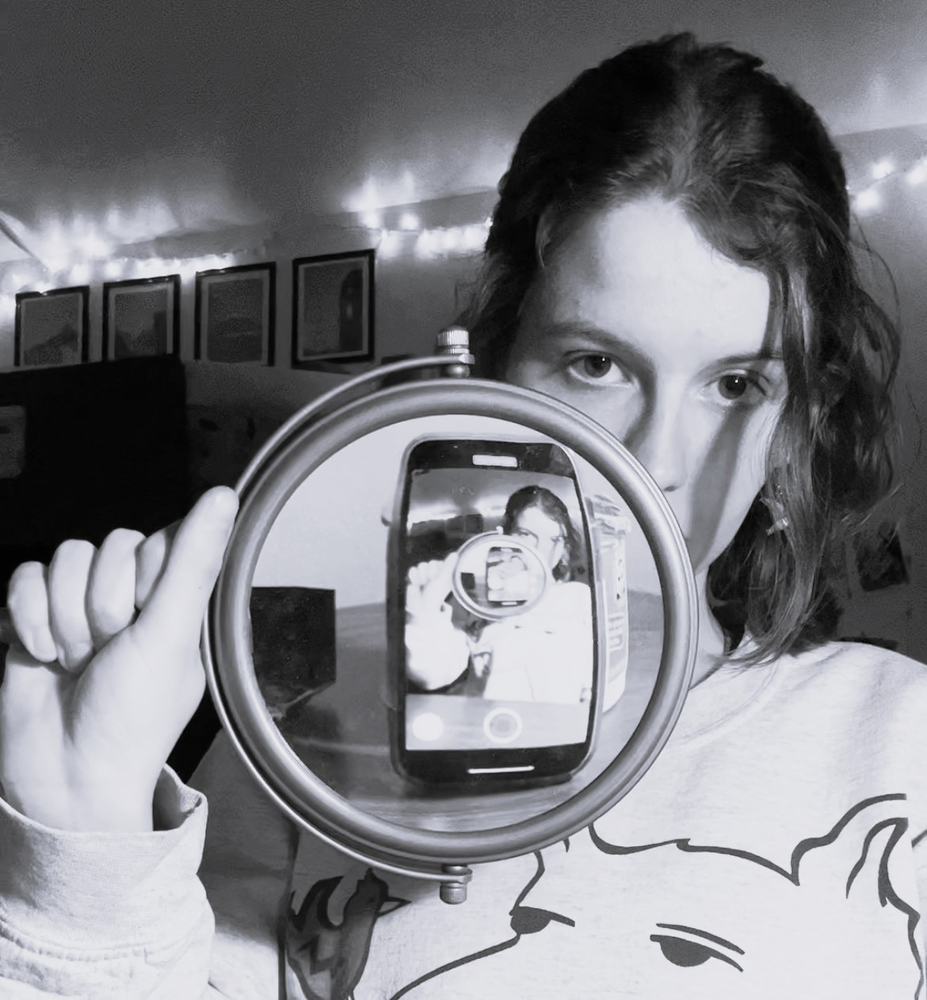

Who made this?
annika
pronouns: they/them
Annika is a third-year student at Michigan State University studying Experience Architecture. A life-long sci-fi and space travel fanatic, the only thing holding them back from chasing astronaut dreams is a healthy fear of heights and a distaste for mathematics. Instead, Annika chooses to use their skills in investigative research, design, and analysis to keep tabs on what they call the bastardization of space travel (as in, it's being run by bastards!)
Annika firmly believes that the time for humanity to grapple with the consequences and implications of space travel has already transcended the sci-fi realm. While they love Star Trek, Star Wars, and Andy Weir, they believe that we need to stop treating space travel as a far-off concept whose impacts will not impact us for decades to come.
Through their work, Annika hopes to engage a wider set of people in the space debate as commercial space travel. Whether it be sending satellites or old rich men to space, Annika believes that everyday people should have the first say in who builds spaceports in their backyards.